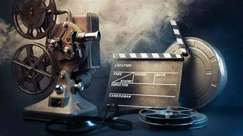

Creative Arts
About Creative Arts
Creative Arts include fields like painting, design, music, photography, and filmmaking, offering an outlet for imaginative and artistic talents.
Creative Arts
What is Creative Arts?
Creative arts refer to disciplines where artists use their imagination and creativity to express ideas through various forms of art. This includes visual arts, graphic design, fashion design, photography, and performing arts. It allows individuals to explore new concepts and bring their visions to life using various media. Artists in this field play a significant role in influencing culture, trends, and society. Creative arts can be a fulfilling career choice for those passionate about expressing themselves through art and design.
Key Skills Required in Creative Arts
In the creative arts field, having strong artistic and technical skills is essential. A good understanding of design principles, color theory, and composition is crucial. Mastery of software tools like Photoshop or Illustrator for graphic design, or camera equipment for photography, is important. Additionally, creativity, problem-solving skills, and attention to detail help create original and high-quality work. Communication and collaboration skills are also vital when working with clients or teams on projects.
Popular Career Options in Creative Arts
Creative arts offer a wide variety of career opportunities. You can become a fashion designer, interior designer, graphic designer, photographer, or visual artist. Many creative professionals work in advertising, media, and entertainment industries, where they design promotional materials, websites, or film sets. With the rise of social media, content creators, including YouTubers and influencers, are also in demand. Artists can also venture into teaching, offering workshops or teaching design and art in schools.
Career Opportunities After Creative Arts
Creative arts graduates can explore numerous career paths. Many choose to work as freelancers or consultants, offering services to businesses and individuals. Some join established companies or advertising agencies as designers, artists, or media specialists. Others find roles in the entertainment industry, such as film production, animation, and video game design. Digital platforms and e-commerce have also opened new opportunities for creative professionals to showcase and sell their work globally. Many also teach and share their skills with the next generation of artists.
How to Pursue a Career in Creative Arts?
To start a career in creative arts, enrolling in specialized degree programs or diploma courses is essential. Depending on your area of interest, programs in graphic design, fashion design, or photography can provide a strong foundation. Building a portfolio showcasing your best work is crucial, as it helps demonstrate your skills to potential employers or clients. Internships or freelance projects provide real-world experience, and networking is key to establishing connections in the creative community. Continuing education and staying updated with industry trends will help you grow in the field.
How to Achieve Your Goals
- Join art schools or workshops to develop technical skills.
- Build a strong portfolio showcasing your work.
- Participate in exhibitions or competitions to gain visibility.
Future Jobs and Opportunities
- Graphic Designer, Illustrator, Photographer.
- Filmmaker, Animator, Art Director.
- Freelance opportunities in the creative industry.